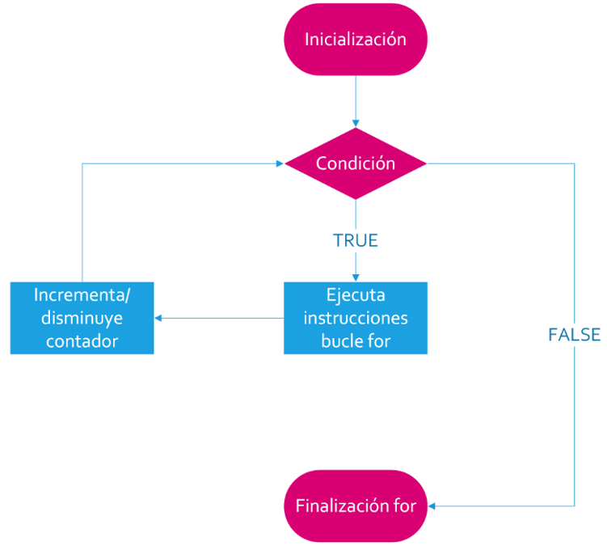
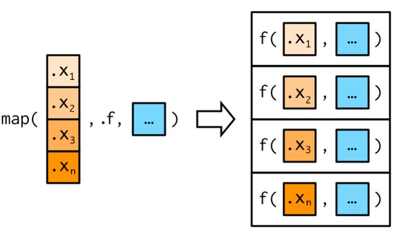

across(.cols,
.fns,
...,
.names)Operaciones múltiples e iteración
temas a desarrollar
map() de purrr
ver ajuste de tasas - ver nest unnest
Operaciones múltiples
Muchas de las tareas que hicimos hasta ahora, ya sea transformando u obteniendo resultados resumenes de variables, las aplicamos variable a variable, es decir repitiendo las operaciones para cada una de las columnas de una tabla.
Una premisa del tidyverse, y también de la programación en general, es no copiar y pegar el código mas de dos veces. Si bien esta práctica ahorra tiempo y no esta mal en si mismo, hacerlo suele ser una fuente de errores y además incrementa las líneas de código del script.
El paquete dplyr de tidyverse implementa desde hace poco tiempo un esquema de trabajo para operaciones múltiples o simultáneas a través de su función across().
Esta función se puede utilizar en estructuras de mutate() o summarise() dependiendo del resultado buscado y tiene dos partes fundamentales: la captura o selección de variables donde vamos a aplicar determinadas funciones y la declaración de las funciones a aplicar.
across()
La función se incorporó a partir de la versión de dplyr 1.0.0 y su sintaxis general es:
donde los argumentos son:
.cols = columnas a transformar
.fns = función o funciones para aplicar a cada columna de .cols
... = argumentos adicionales de las funciones especificadas anteriormente (ejemplo: na.rm = T)
.names = nombres de las columnas de salida. Aquí, {.col} es un marcador especial al que se le puede agregar el sufijo deseado.
Aplicación en resúmenes
Veamos un ejemplo de uso para situaciones donde queremos obtener resumenes simultáneos.
Tomemos la siguiente tabla de datos ficticios:
datos# A tibble: 10 × 4
a b c d
<dbl> <dbl> <dbl> <dbl>
1 -0.560 1.22 -1.07 0.426
2 -0.230 0.360 -0.218 -0.295
3 1.56 0.401 -1.03 0.895
4 0.0705 0.111 -0.729 0.878
5 0.129 -0.556 -0.625 0.822
6 1.72 1.79 -1.69 0.689
7 0.461 0.498 0.838 0.554
8 -1.27 -1.97 0.153 -0.0619
9 -0.687 0.701 -1.14 -0.306
10 -0.446 -0.473 1.25 -0.380 Supongamos que queremos calcular la media de cada variable numérica, con lo que sabemos hasta ahora podríamos hacerlo repitiendo para cada variable.
datos |> summarise(
a = mean(a),
b = mean(b),
c = mean(c),
d = mean(d),
)# A tibble: 1 × 4
a b c d
<dbl> <dbl> <dbl> <dbl>
1 0.0746 0.209 -0.425 0.322Pero esto rompe la regla general que buscamos de nunca copiar y pegar más de dos veces, ocasionando que me pueda equivocar al editar el nombre de la variable que va en cada mean() y generando tantas líneas de código como cantidad de variables tengo.
Para solucionarlo vamos a aplicar across() realizando el resumen simultáneo en una sola línea.
datos |> summarise(
across(.cols = a:d,
.fns = mean),
)# A tibble: 1 × 4
a b c d
<dbl> <dbl> <dbl> <dbl>
1 0.0746 0.209 -0.425 0.322Observemos que el primer argumento es el rango de nombres de variables que estamos seleccionando donde aplicar la función que aperece como segundo argumento.
Es decir, que el primer argumento de la función responde de la misma forma que la función select() y por ende, aplican también las funciones ayudantes de selección.
everything(): coincide con todas las variables.group_cols(): seleccione todas las columnas de agrupación.starts_with(): comienza con un prefijo.ends_with(): termina con un sufijo.contains(): contiene una cadena literal.matches(): coincide con una expresión regular.
num_range(): coincide con un rango numérico como x01, x02, x03.all_of(): coincide con nombres de variables en un vector de caracteres. Todos los nombres deben estar presentes; de lo contrario, se generará un error de fuera de límites.any_of(): igual queall_of(), excepto que no se genera ningún error para los nombres que no existen.where(): aplica una función a todas las variables y selecciona aquellas para las cuales la función regresa TRUE.
Mostremos otra tabla de ejemplo similar a la anterior:
datos# A tibble: 10 × 5
grupo a b c d
<chr> <dbl> <dbl> <dbl> <dbl>
1 B -1.12 1.52 0.304 1.03
2 B -0.403 -1.55 0.448 -0.285
3 A -0.467 0.585 0.0530 -1.22
4 B 0.780 0.124 0.922 0.181
5 B -0.0834 0.216 2.05 -0.139
6 B 0.253 0.380 -0.491 0.00576
7 A -0.0285 -0.502 -2.31 0.385
8 A -0.0429 -0.333 1.01 -0.371
9 B 1.37 -1.02 -0.709 0.644
10 A -0.226 -1.07 -0.688 -0.220 Aquí datos agrega una variable categórica llamada grupo con dos valores (A y B).
Usando group_by() combinada con una selección completa (ayudante everything) del resto de las variables obtenemos las medias por cada uno de estos grupos.
datos |>
group_by(grupo) |>
summarise(across(everything(), mean))# A tibble: 2 × 5
grupo a b c d
<chr> <dbl> <dbl> <dbl> <dbl>
1 A -0.191 -0.331 -0.485 -0.357
2 B 0.132 -0.0552 0.421 0.239El argumento .cols también puede recibir construcciones booleanas utilizando los operadores conocidos como ! (negación) y conectores lógicos como & (AND) y | (OR) entre las funciones ayudantes de selección.
.cols = !where(is.numeric) & starts_with("a")En este ejemplo, se seleccionan todas las columnas no numéricas, cuyo nombre comienza con “a”.
Hasta ahora vimos el ejemplo de aplicar una función simple como mean() a un grupo de variables.
Que sucede si entre los datos de esas variables hay valores NA?
datos_na# A tibble: 5 × 4
a b c d
<dbl> <dbl> <dbl> <dbl>
1 1.56 -1.27 NA -0.473
2 -0.560 NA -1.05 -1.07
3 -0.230 1.22 0.238 -0.218
4 NA -0.446 1.29 -1.03
5 0.0705 -0.687 NA -0.729Vamos a necesitar incorporar el argumento na.rm = TRUE a la función mean() porque si no el resultado será:
datos_na |> summarise(
across(.cols = a:d,
.fns = mean),
)# A tibble: 1 × 4
a b c d
<dbl> <dbl> <dbl> <dbl>
1 NA NA NA -0.703Como lo hacemos dentro de un across()?
Existen dos formas sintácticas de realizarlo.
Una función estilo-purrr (tidyverse) que tiene la forma
~ mean(.x, na.rm = TRUE)Una función anónima de R base mediante
function(x) mean(x, na.rm = TRUE)o más sencilla en su forma de atajo:\(x) mean(x, na.rm = TRUE)
# forma tidyverse (purrr)
datos_na |>
summarise(
across(a:d, ~ mean(.x, na.rm = TRUE))
)# A tibble: 1 × 4
a b c d
<dbl> <dbl> <dbl> <dbl>
1 0.210 -0.293 0.161 -0.703# forma R base (atajo función anómina)
datos_na |>
summarise(
across(a:d, \(x) mean(x, na.rm = TRUE))
)# A tibble: 1 × 4
a b c d
<dbl> <dbl> <dbl> <dbl>
1 0.210 -0.293 0.161 -0.703Se le llama función anónima justamente porque no hace falta ponerle nombre. Acostumbrarse a esta notación es más útil que la forma del tidyverse porque aplica también para otras funciones.
Para incorporar más de una función dentro de across() debemos incluirlas dentro de una lista [list()]
datos_na |>
summarise(
across(a:d, list(
media = \(x) mean(x, na.rm = TRUE),
desvio = \(x) sd(x, na.rm = TRUE),
n_na = \(x) sum(is.na(x))))
)# A tibble: 1 × 12
a_media a_desvio a_n_na b_media b_desvio b_n_na c_media c_desvio c_n_na
<dbl> <dbl> <int> <dbl> <dbl> <int> <dbl> <dbl> <int>
1 0.210 0.936 1 -0.293 1.07 1 0.161 1.17 2
# ℹ 3 more variables: d_media <dbl>, d_desvio <dbl>, d_n_na <int>La lista contiene cada función a aplicar, bajo nombres definidos a la izquierda del igual. El resultado muestra 12 variables producto de hacer tres operaciones en cada una de las 4 variables de la tabla.
Observemos que los nombres de las variables resultado se componen del nombre de la columna, un guión bajo y el nombre definido de la función aplicada (variable_funcion)
La estructura de estos nombres se pueden modificar con el argumento .names.
El marcador especial para el nombre de columna es {.col} y para el nombre de la función definida es {.fn}.
Por ejemplo, podríamos invertir el orden predeterminado de los nombres del resumen (funcion_variable)
datos_na |>
summarise(
across(a:d, list(
media = \(x) mean(x, na.rm = TRUE),
n_na = \(x) sum(is.na(x))),
.names = "{.fn}_{.col}")
)# A tibble: 1 × 8
media_a n_na_a media_b n_na_b media_c n_na_c media_d n_na_d
<dbl> <int> <dbl> <int> <dbl> <int> <dbl> <int>
1 0.210 1 -0.293 1 0.161 2 -0.703 0Aplicación en conversión o creación de nuevas variables
Hasta el momento trabajamos con la función across() dentro de un resumen (summarise) pero al comienzo también dijimos que se puede utilizar para transformaciones masivas de datos.
La plataforma para lograr esto es mutate() y lo podemos usar modificando las variables originales o bien creando nuevas variables si cambiamos su nombre con .names.
Para ejemplificar, aplicaremos la función coalesce() perteneciente a dplyr, para convertir los valores NA en ceros, transformando las variables originales anteriores.
datos_na |>
mutate(
across(a:d, \(x) coalesce(x, 0))
)# A tibble: 5 × 4
a b c d
<dbl> <dbl> <dbl> <dbl>
1 1.56 -1.27 0 -0.473
2 -0.560 0 -1.05 -1.07
3 -0.230 1.22 0.238 -0.218
4 0 -0.446 1.29 -1.03
5 0.0705 -0.687 0 -0.729Si no agregamos ningún otro argumento el reemplazo de los valores NA por 0 se realiza en cada variable sobrescribiendo las observaciones.
En cambio, si queremos que coexistan las variables originales con las nuevas incluyendo estos cambios podemos declarar en el argumento .names la estructura de los nombres nuevos.
datos_na |>
mutate(
across(a:d, \(x) coalesce(x, 0),
.names = "{.col}_na_cero")
)# A tibble: 5 × 8
a b c d a_na_cero b_na_cero c_na_cero d_na_cero
<dbl> <dbl> <dbl> <dbl> <dbl> <dbl> <dbl> <dbl>
1 1.56 -1.27 NA -0.473 1.56 -1.27 0 -0.473
2 -0.560 NA -1.05 -1.07 -0.560 0 -1.05 -1.07
3 -0.230 1.22 0.238 -0.218 -0.230 1.22 0.238 -0.218
4 NA -0.446 1.29 -1.03 0 -0.446 1.29 -1.03
5 0.0705 -0.687 NA -0.729 0.0705 -0.687 0 -0.729Otras conversiones posibles pueden utilizar funciones de reemplazo para variables cuantitativas como por ejemplo exp(), log(), scale(), etc. O bien convertir a factor variables character y hasta aplicar funciones condicionales como if_else() o case_when().
Filtros con iteraciones
El paquete dplyr trae consigo algunas funciones iterativas emparentadas con across() para usar dentro de estructuras de filtro -filter()-, es el caso de if_any() e if_all().
if_any() enmascara una repetición de OR lógicos if_all() una secuencia de AND lógicos.
Usémoslas con los datos con los que venimos trabajando.
datos_na |>
filter(if_any(a:d, is.na))# A tibble: 4 × 4
a b c d
<dbl> <dbl> <dbl> <dbl>
1 1.56 -1.27 NA -0.473
2 -0.560 NA -1.05 -1.07
3 NA -0.446 1.29 -1.03
4 0.0705 -0.687 NA -0.729Devuelve las observaciones donde en alguna de las variables encuentra algún NA.
Es lo mismo que filter(is.na(a) | is.na(b) | is.na(c) | is.na(d))
datos_na |>
filter(if_all(a:d, is.na))# A tibble: 0 × 4
# ℹ 4 variables: a <dbl>, b <dbl>, c <dbl>, d <dbl>Devuelve las observaciones donde en todas las variables encuentra valores NA. En este caso no hay ninguna que cumpla esa condición, por eso el resultado es un dataframe vacío.
Es lo mismo que filter(is.na(a) & is.na(b) & is.na(c) & is.na(d))
Una forma rápida de armar filtros por múltiples variables escribiendo poco código.
Las dos funciones de filtro trabajan con el mismo esquema que across(), por lo tanto se le puede aplicar una función o expresión de condición (todas deben devolver TRUE o FALSE)
datos |>
filter(if_all(a:d, \(x) x > -0.5 & x < 1))# A tibble: 2 × 5
grupo a b c d
<chr> <dbl> <dbl> <dbl> <dbl>
1 B 0.780 0.124 0.922 0.181
2 B 0.253 0.380 -0.491 0.00576Acá el valor de cada en todas las observaciones filtradas debe estar en el rango -0,5 a 1. Hay una que cumple la condición en las 4 variables numéricas.
Operaciones por fila
La filosofía del tidy-data, es particularmente adecuada para realizar operaciones por columnas (variables). Todas las funciones de resúmenes toman los valores de forma vertical para realizar una operación, como si tuviesemos vectores “parados” dentro de un dataframe.
Hay algunas circunstancias que nos lleva a necesitar realizar operaciones por filas y por supuesto esto es mucho más difícil.
El paquete dplyr incorporó en sus últimas versiones la función rowwise() que implementa un agrupamiento por cada fila, haciendo que sea más sencillo hacer estas tareas.
El uso más común es hacer calculos agregados por filas (por ejemplo, calcular la media de x, y, z).
La apariencia de los resultados de la función son similares a group_by() donde solo vemos cambios en los metadatos del dataframe que luego van a ser aprovechados por las funciones siguientes.
Tenemos un pequeño dataframe de prueba:
# A tibble: 2 × 3
x y z
<int> <int> <int>
1 1 3 5
2 2 4 6Y aplicamos la función rowwise()
df |>
rowwise()# A tibble: 2 × 3
# Rowwise:
x y z
<int> <int> <int>
1 1 3 5
2 2 4 6Lo único que vemos es la aparición de un metadatos que dice “rowwise”. Significa que las filas de la tabla está agrupadas a lo ancho y las funciones que vengan despues van a respetar este agrupamiento.
Para ver los cambios que produce este agrupamiento veamos un ejemplo comparativo.
df |>
mutate(m = mean(c(x, y, z)))# A tibble: 2 × 4
x y z m
<int> <int> <int> <dbl>
1 1 3 5 3.5
2 2 4 6 3.5df |>
rowwise() |>
mutate(m = mean(c(x, y, z)))# A tibble: 2 × 4
# Rowwise:
x y z m
<int> <int> <int> <dbl>
1 1 3 5 3
2 2 4 6 4Si usamos mutate() con un dataframe normal, calcula la media de x, y, z tomando los valores de todas las filas. Si lo aplicamos a una tabla con rowwise, calcula la media de cada fila, tomando los valores de cada una de las tres variables.
Opcionalmente, se puede indicar variables como “identificador”.
Estas variables se conservan cuando se llama a un summarise() por ejemplo, por lo que se comportan de manera similar a las variables de agrupación pasadas a group_by().
Cambiamos el dataframe que ahora es:
# A tibble: 2 × 4
nombre x y z
<chr> <int> <int> <int>
1 Mercurio 1 3 5
2 Venus 2 4 6df |>
rowwise() |>
summarise(m = mean(c(x, y, z)))# A tibble: 2 × 1
m
<dbl>
1 3
2 4df |>
rowwise(nombre) |>
summarise(m = mean(c(x, y, z)))`summarise()` has grouped output by 'nombre'. You can override using the
`.groups` argument.# A tibble: 2 × 2
# Groups: nombre [2]
nombre m
<chr> <dbl>
1 Mercurio 3
2 Venus 4rowwise() es solo una forma especial de agrupación por fila, por lo que si deseamos eliminarla de una tabla, simplemente llamamos a ungroup().
c_across()
La versión de across() para operaciones simultáneas por filas se llama c_across() y tiene los mismos fundamentos aplicados a estas situaciones, aunque es mucho más sencilla dado que no tiene argumentos extras.
Aplicada sobre el último dataframe:
df |>
rowwise(nombre) |>
summarise(m = mean(c_across(x:z)))`summarise()` has grouped output by 'nombre'. You can override using the
`.groups` argument.# A tibble: 2 × 2
# Groups: nombre [2]
nombre m
<chr> <dbl>
1 Mercurio 3
2 Venus 4O bien, seleccionando los tipos de datos numéricos:
df |>
rowwise(nombre) |>
summarise(m = mean(c_across(where(is.numeric))))`summarise()` has grouped output by 'nombre'. You can override using the
`.groups` argument.# A tibble: 2 × 2
# Groups: nombre [2]
nombre m
<chr> <dbl>
1 Mercurio 3
2 Venus 4Sin duda este abordaje tiene mayor utilidad cuando las operaciones por fila contemplan muchas variables.
Bucles tradicionales
Un bucle es una estructura de control que permite ejecutar un conjunto de instrucciones repetidamente mientras se cumple una condición específica. Los bucles, se encuentran en todos los lenguajes de programación y se utilizan para automatizar tareas repetitivas (iterar).
El lenguaje R también los implementa en sus paquetes base y dispone de tres de ellos:
for(): estructura de control de flujo de iteración a partir de una secuencia de elementos
while(): estructura de control de flujo de iteración mientras una condición es verdadera
repeat(): estructura de control de flujo de iteración de repetición y control manual conbreak
Bucle for
La idea principal de este bucle es repetir un bloque de código un número específico de veces o para cada elemento en objeto (vector, etc).
Su esquema de funcionamiento es el siguiente:

La estructura sintáctica viene dada por un snippet que RStudio escribe por nosotros:
for (variable in vector) {
}Un ejemplo sencillo que muestra su funcionamiento puede ser.
for (i in 1:5) {
cat("El valor de i es:", i, "\n")
}El valor de i es: 1
El valor de i es: 2
El valor de i es: 3
El valor de i es: 4
El valor de i es: 5 Lo que estamos haciendo es recorriendo un vector numérico de 5 posiciones, declarado bajo el nombre de i y luego entre llaves se encuentra el código que escribe en pantalla un texto fijo que incluye a los valores de i en cada repetición.
El mismo formato de bucle puede recorrer posiciones y/o elementos de un objeto de la siguiente forma:
x <- c(6, 4, 3, 8)
for (i in 1:length(x)) {
print(x[i]*4) # utiliza la i para recorrer los elementos de x por su indice
}[1] 24
[1] 16
[1] 12
[1] 32Recorre el vector x y multiplica cada elemento por 4. Lo mismo que hace R vectorizadamente de manera simple.
x * 4[1] 24 16 12 32Por supuesto que la mayoría de las tareas que R ejecuta de forma vectorizada hace que no tengamos que usar esta forma de bucle para operaciones comunes pero, a veces cuando el código dentro de las llaves es extenso y complejo será necesario.
Bucle while
Este bucle se repite mientras la condición especificada es evaluada como verdadera (TRUE). Si en algún momento la condición se evalúa como falsa (FALSE), el bucle se detiene y la ejecución continúa con el código después del bucle.
Su esquema de funcionamiento es el siguiente:

Su snippet es:
while (condition) {
}Un ejemplo posible muestra que primero inicializamos una variable i que servirá como contador, luego escribimos una condición en el inicio del bucle indicando que recién saldremos de él cuando esta variable sea igual a 6 y finalmente dentro de las llaves armamos el código que se va a repetir no olvidando de la sumatoria del contador i.
i <- 1
while (i <= 5) {
cat("El valor de i es:", i, "\n")
i <- i + 1
}El valor de i es: 1
El valor de i es: 2
El valor de i es: 3
El valor de i es: 4
El valor de i es: 5 El último de los bucles, repeat() no tiene automatizada su salida y necesita que incorporemos dentro de su cuerpo entre llaves la función break a partir de alguna condición (se suele utilizar la estructura condicional if()). Esta forma de trabajo lo hace peligroso porque suelen generar bucles infinitos de donde no hay salida, salvo la interrupción abrupta del interprete.
Dado que su construcción es muy artesanal no vamos a mostrarlo en este documento. Su uso no será necesario durante el curso y probablemente no lo necesiten aplicar en el futuro.
Mapeos con purrr
El patrón de iterar sobre un vector o variable, hacer algo con cada elemento u observación y almacenar los resultados es tan común que el paquete purrr incluído en tidyverse aporta una familia de funciones dedicadas a esta tarea.
Hay una función para cada tipo de output:
map() crea una lista. map_lgl() crea un vector lógico. map_int() crea un vector de enteros. map_dbl() crea un vector de numérico (double). map_chr() crea un vector de caracteres. map_df() crea un dataframe
Cada función map, mapea, es decir, toma un vector como input, aplica una función a cada elemento y luego devuelve un nuevo vector que tiene la misma longitud (y los mismos nombres) que el input. El tipo de vector está determinado por el sufijo de la función map.

Su estructura sintáctica es:
map(.x = ,
.f = ,
... = )Donde en .x es un vector, un data-frame o lista, .f es la función a aplicar y ... son otros argumentos opcionales.
Las funciones map tienen un nivel superior de abstracción y puede llevar mucho tiempo entender cómo funcionan.
Algunos usuarios evitan los bucles tradicionales porque son lentos o “viejos”, pero esto no es así. Las principales ventajas de usar funciones como map() no es la velocidad, sino la claridad: hacen que tu código sea más fácil de escribir y leer.
Unos ejemplos simples de uso son:
# a partir del dataframe datos utilizado anteriormente
datos# A tibble: 10 × 5
grupo a b c d
<chr> <dbl> <dbl> <dbl> <dbl>
1 B -1.12 1.52 0.304 1.03
2 B -0.403 -1.55 0.448 -0.285
3 A -0.467 0.585 0.0530 -1.22
4 B 0.780 0.124 0.922 0.181
5 B -0.0834 0.216 2.05 -0.139
6 B 0.253 0.380 -0.491 0.00576
7 A -0.0285 -0.502 -2.31 0.385
8 A -0.0429 -0.333 1.01 -0.371
9 B 1.37 -1.02 -0.709 0.644
10 A -0.226 -1.07 -0.688 -0.220 map_dbl(.x = datos, .f = mean)Warning in mean.default(.x[[i]], ...): argument is not numeric or logical:
returning NA grupo a b c d
NA 0.002867988 -0.165413060 0.058542390 0.000676731 Calcula la media por cada una de las variables numéricas. Como la variable grupo no lo es me devuelve una advertencia y un NA como resultado.
Si quisiera evitarlo podemos hacer.
map_dbl(.x = datos |> select(-grupo),
.f = mean) a b c d
0.002867988 -0.165413060 0.058542390 0.000676731 Observen que dentro del argumento .x construimos una estructura con tuberías donde seleccionamos a todas las variables menos a grupo (esto se puede hacer en los argumentos de muchas funciones).